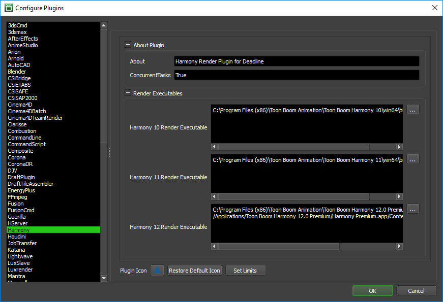

Harmony¶
Job Submission¶
You can submit jobs from within Harmony by installing the integrated submission script, or you can submit them from the Deadline Monitor. The instructions for installing the integrated submission script can be found further down this page.
To submit from within Harmony, press the Submit To Deadline button in the scripts toolbar
Submission Options¶
The general Deadline options are explained in the Job Submission documentation, and the Draft/Integration options are explained in the Draft and Integration documentation.
The Harmony specific options are:
Use Database Scene: If this option is enabled, Harmony use a scene from the Database it is connected to.
Submit Harmony Scene: If this option is enabled, the scene file will be submitted with the job, and then copied locally to the Worker machine during rendering.
Harmony File: The scene file to be rendered.
Environment: The Environment for the scene being rendered from the database.
Job: The job that the scene is part of. Used for database rendering.
Scene: The name of the scene that is being rendered. Used for database rendering.
Version: The version of the scene that is to be rendered. Used for database rendering.
Frame List: The list of frames to render.
Frames Per Task: This is the number of frames that will be rendered at a time for each job task.
Harmony Version: The version of Harmony to render with.
Use Resolution Preset: If this option is enabled, Harmony uses the specified resolution preset.
Resolution Preset: The resolution preset to use. If set to Custom, resolution preset will be the name specified in Preset Name.
Preset Name: The name of the custom resolution preset that will be used.
Resolution X: The width of the rendered images, if 0 the current resolution setting in the scene will be used.
Resolution Y: The height of the image, if 0 the current resolution setting in the scene will be used.
Field of View: The field of view, if 0 the current field of view setting in the scene will be used.
Camera: The Camera to render with. If Blank, the scene will be rendered with the current Camera.
Additional Options
Output#Node: The path of the node that is going to be rendered
Output#Type: The type of output (Image or Movie) that is being rendered by the node.
Output#Path: The path of the output that is being created by the render node.
Output#LeadingZero: The number of leading zeroes in the frame padding of the output filename. The total frame padding length is LeadingZeroes + 1. (Only used if Output Type is Image)
Output#Format: The format that the output images will use. (Only used if Output Type is Image)
Output#StartFrame: The frame that frame 1 will correspond to when rendering. If this value is 1 then the corresponding job output will not work properly. (Only used if Output Type is Image)
Plugin Configuration¶
You can configure the Harmony plugin settings from the Monitor. While in power user mode, select Tools -> Configure Plugins and select the Harmony plugin from the list on the left.
Note, if the executable supports a MAJOR.MINOR.REVISION (9.0.123) numbering system in its path, then you will need to configure the explicit exe path to the particular revision that you have installed on your machines. Deadline does not track every possible revision available or indeed where it might be custom installed to, so a studio should verify their exe paths are correct for each application version they choose to use with Deadline. Multiple exe paths can still be declared and the first one that is found on a particular Worker on a particular platform will be used from the exe list.
Render Executables
Harmony Executable: The path to the Harmony executable used for rendering. Enter alternative paths on separate lines.
Integrated Submission Script Setup¶
The following procedures describe how to install the integrated Harmony submission script. This script allows for submitting Harmony render jobs to Deadline directly from within Harmony.
You can either manually install the submission script or if you are not connected to a Toon Boom Server you can run the submitter installer.
Submitter Installer¶
Run the Submitter Installer located at
<Repository>/submission/Harmony/Installers.After installing the script you may need to add the script menu to your toolbar. This can be accomplished by right clicking on your toolbar inside of Harmony, and then choosing the scripting option.
Manual Installation¶
In Harmony open the Script editor through the Windows menu.
In the script editor window import
[Repository]\submission\Harmony\Client\DeadlineHarmonyClient.jsusing the import scripts buttonAdd the script menu to your toolbar. This can be accomplished by right clicking on your toolbar and choosing the scripting option.
Press the manage scripts button in the scripting menu to open the script manager.
In the script manager, add the function SubmitToDeadline from within the script
DeadlineHarmonyClient.jsto the toolbar.
FAQ¶
What versions of Harmony are supported?
Deadline supports version 12 and upwards.
Is Toon Boom Server supported by Deadline?
Yes, Toon Boom’s Server (Database mode) is supported by the deadline submitter and plugin scripts. The integrated submitter installer does not work with the server however so the submitter must be installed manually.
Error Messages and Meanings¶
This is a collection of known Harmony error messages and their meanings, as well as possible solutions. We want to keep this list as up to date as possible, so if you run into an error message that isn’t listed here, please visit the Thinkbox Help Centre and let us know.
Currently, no error messages have been reported for this plugin.

{kind=link}
{kind=link}
{kind=link}
{kind=link}
{kind=link}
{kind=link}